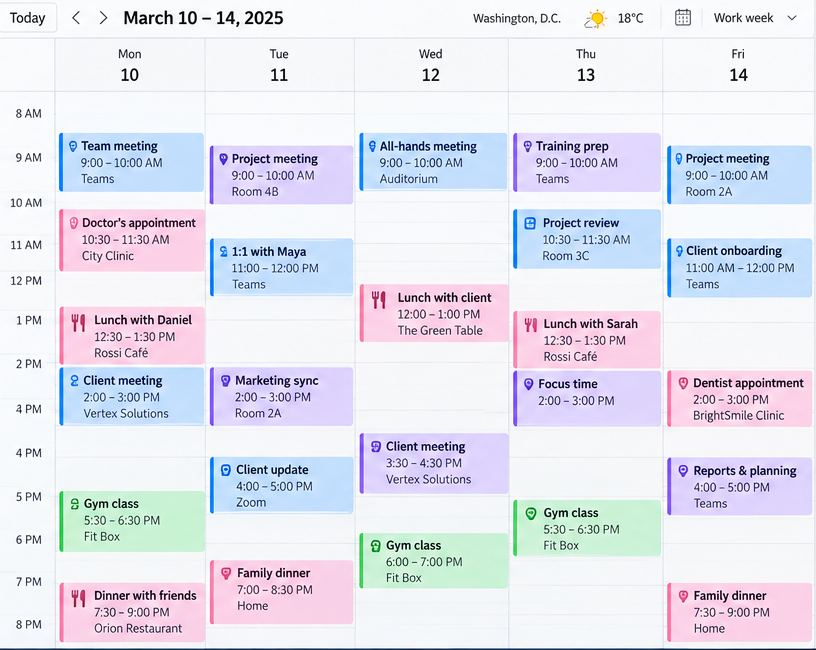

RAIN CHECK / CLASS 2 / B1
Can we take
a rain check?
Plans change. What would you say?
I can politely decline an invitation, explain a scheduling conflict, and suggest another time.

LANGUAGE IN CONTEXT
Something came up!
03 / 13
Alex is preparing for his vacation, but his schedule keeps changing.
Maya Chen / Project meeting
Hi Alex,
Something urgent came up, and I won't be able to make our Tuesday meeting. Could we move it to Wednesday?
Daniel Park / Dinner plans
Hey Alex!
I can't make it to dinner on Thursday. Can we take a rain check?
Chris Morgan / Training session
Hi Alex,
Would it be possible to push our training session back to 3 p.m.? I've got another meeting at 1.
LANGUAGE FOR THE GOAL
Chunks
04 / 13
Something came up.
I can’t make it.
Can we take a rain check?
LANGUAGE FOR THE GOAL
Chunks
05 / 13
Put it off
Push it back
Move it up
Call it off

GRAMMAR FOR ANALYSIS
What fits each situation?
06 / 13
Match the sentences to their purpose. Explain your choices.
A Let’s put off the meeting until Friday.
B Let’s call off the meeting.
C Can we push the meeting back to 4?
D Can we move the meeting up to 10?
1 An earlier time
2 A later time
3 Another day
4 No meeting
CONTROLLED PRACTICE 1
What’s the best response?
07 / 13
Choose a reply that fits the situation.
1 You have an unexpected problem.
Something came up. / Let’s move it up.
2 The meeting changes from 2 p.m. to 4 p.m.
Can we move it up? / Can we push it back?
3 You want to accept a dinner invitation another day.
Can we take a rain check? / We need to call it off.
4 The event will not happen anymore.
Let’s put it off. / We need to call it off.
5 The training changes from 3 p.m. to 11 a.m.
Could we move it up? / Could we push it back?
CONTROLLED PRACTICE 2
Change the plan
08 / 13
Rewrite each message with the expression shown. Keep the meaning.
1 Can we have the meeting at 4 instead of 2?
push back
2 Let’s cancel the presentation.
call off
3 Can we meet at 10 instead of 11?
move up
4 I can’t go to dinner tonight, but I’d love to go another day.
take a rain check
FREE PRACTICE
What would you do?
09 / 13
Choose what to change. Explain why and talk to the person involved.
A A client meeting and an urgent meeting with your manager both start at 2 p.m.
B A friend invites you to dinner tonight. You’re exhausted and want to stay home.
C Your trainer is sick. Nobody can replace them. Would you postpone or cancel?
MISSION
Save the schedule
10 / 13
Contact the people involved. Agree on an updated calendar and explain the changes to your manager.
| TIME | TODAY |
| 10:00 | Team meeting |
| 11:30 | |
| 14:00 | Client presentation |
| 15:30 | |
| 16:00 | Training session |
| 19:30 | Dinner with a friend |
Manager / Team meeting
Hi Alex,
I need the team at 10 a.m. today.
Client / Presentation
Hi Alex,
I can’t attend at 2 p.m. I’m free at 3:30 p.m.
Trainer / Training session
Hi Alex,
I need to leave at 4 p.m. I’m available at 11:30 a.m.
Friend / Dinner tonight?
Hey Alex,
Are you still coming at 7:30 tonight?
RECAP
Can we make it work?
11 / 13
Respond without looking at your notes.
1 Your meeting is too early.
2 Your meeting is too late.
3 You can’t attend dinner, but want to meet another day.
4 Something unexpected happened.
5 The event will not happen anymore.
RECAP / ANSWERS
Possible answers
12 / 13
Compare your reply with these examples.
1 Could we push it back?
2 Could we move it up?
3 I can’t make it. Can we take a rain check?
4 Something came up.
5 We need to call it off.
I’m glad to have you here